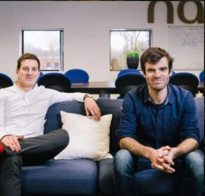

Présentation de l'entreprise

L’organisation est une Société de personnes (associés) fondée par deux ingénieurs français,
Aymeric Barthès et Gaëtan Séverac. L’idée originale dérière l’entreprise était de simplifier
des tâches répétitives et pénible en créant des robots capables de reproduire des tâches fatiguantes.
De cette idée est créée la stat-up en 2011 et innove encore aujourd’hui avec comme objectifs
de réduire les dégâts fait à l’environnement et réduire les travaux répétitifs des cultivateurs
Aujourd'hui ils comptabilisent 4 différents types de robots. Leur slogan « Autonomous robots
for easier farming », signifiant en français « Robots autonomes pour de l’agriculture plus simple »
représente bien leurs objectfis. Le siège sociale de l’organisation est situé à Escalquens en
Haute-Garonne. L’entreprise vielle de 10 ans est une petite moyenne entreprise ( 51 - 200 employés ).